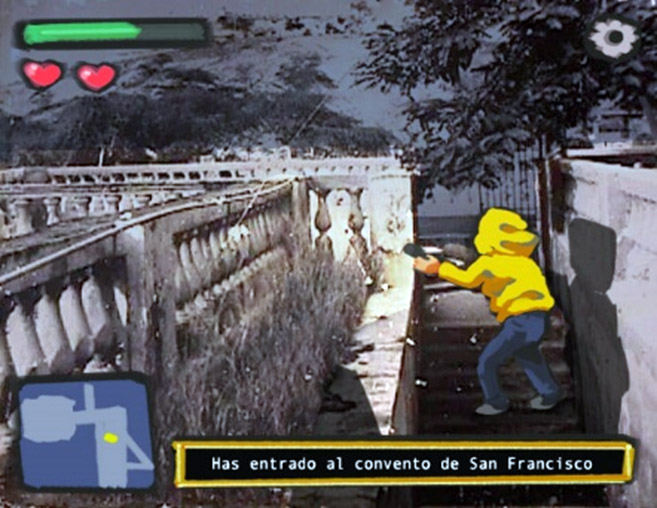
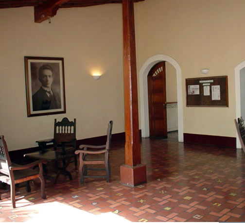
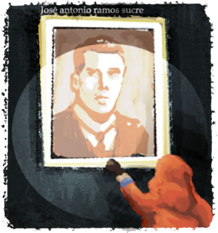
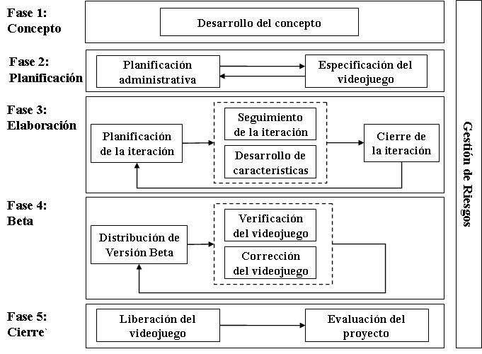

VIDEOJUEGO DEL GÉNERO ROL AMBIENTADO EN EL CASCO HISTÓRICO DE LA CIUDAD DE CUMANA, ESTADO SUCRE
Valentina Azócar
Juegos como material didáctico
Videojuego tipo rol: características
Características del Casco Histórico de Cumaná.
¿por qué seria un buen escenario para un videojuego de este genero?
Planteamiento
Justificación
Objetivos
Metodología
Antecedentes
Juegos como material didáctico
Disponibilidad
Comunicar información de forma fragmentada
El conocimiento es adquirido de una forma implícita
Flexibilidad
Características de los juego rol
Interacción con el personaje y una historia profunda
El jugador debe enfrascarse en una aventura conociendo nuevos personajes, explorando localidades, juntando objetos y conocimiento
Características de los juego rol
Se desarrolla en distintas épocas y se sitúan en sitios ricos en historia y cultura para explorar
¿Por que el casco histórico de Cumaná?
Valor histórico
Monumentos
Exploración
Escenario estratégico
Aprendizaje

Arte conceptual del juego
Planteamiento del problema
Valor del casco histórico para la nación.
Acceso limitado a la información.
Falta de visitas a los monumentos y presencia de información en programas educativos.
Planteamiento del problema
Falta de interés y desconocimiento sobre el patrimonio.
Deterioro en las edificaciones.
Celebración de los 500 años de Cumaná.
Planteamiento del problema
Falta de material digital con información relevante.
Material informativo poco enfocado a nuevas generaciones.
Justificación
Motivar a un sector de la población con más afinidad por este tipo de medios a conocer más sobre la ciudad.
Material de aprendizaje.
Rescate de la memoria cultural de la ciudad.

Casa de José Antonio Ramos Sucre
Justificación
Aumentar las oportunidades de visitas turísticas al casco histórico de Cumaná.
Incentivar el desarrollo de videojuegos tomando como escenografía localidades de este país.

Arte conceptual del juego
Objetivo general
Desarrollar un videojuego del género rol ambientado en el casco histórico de la Cumana, estado Sucre.
Objetivo especificos
Seleccionar herramientas para la creación de un videojuego rol para la plataforma Windows, utilizando el motor de videojuegos Unity y tecnología 3D.
Planificar desarrollo del videojuego.
Objetivo especificos
Diseñar el videojuego, edificaciones en las que será ambientado, historia y misiones.
Construir el videojuego a partir de los modelos realizados.
Evaluar el producto beta con un grupo de muestra de potenciales usuarios.
Metodología
SUM para desarrollo de videojuegos
Metodología: roles
Cliente
Productor interno
Equipo de desarrollo
Diseñador de juego
Programador
Artista sonoro
Artista gráfico
Verificador Beta
Metodología: proceso

Antecedentes
Muñoz (2014) "Simulación inmersiva De La Iglesia Santa Inés de Cumaná, Estado Sucre, Venezuela. Ambientada al año 1929"
Caballero (2014) “Aplicación multimedia para la narración de la historia de la iglesia Santa Inés en el período de 1929 hasta la actualidad”
Galindo (2016) “Desarrollo de un videojuego indie, 3d, del género role player”
Antecedentes
Jensen (2016) "Inside"
Moldenhauer (2017) "Cuphead"
Gracias por su atención